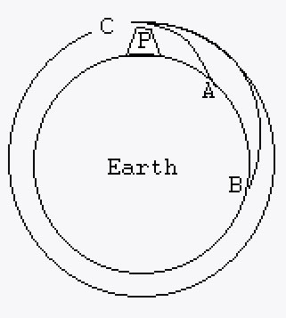
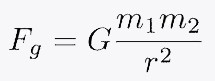
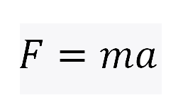
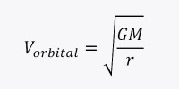

So how does it work?
The image below shows the trajectories of 3 different projectiles launched from the point P. Once the projectile is fired the only force acting on it is it's weight (gravity). The 3 projectiles each have different horizontal velocities. Projectile A has a small horizontal velocity and so it only travels a short distance before hitting the ground. Projectile B has a greater horizontal velocity and so travels further before hitting the ground. Projectile C has the greatest horizontal velocity . It's speed is so great that it falls at the same rate that the earth curves away from it. It returns all the way back to point P. This projectile is now in orbit.

In real life we don't have a tower all the way to space, so a rocket is used to give the projectile enough horizontal velocity and height to reach orbit.
Gravity can be described as an attractive force, by Newton's equation below. The gravitaitonal force between two bodies is directly proportional to the product of the masses, and inversely proportional to the square of the distance between them. The equation gives the force between two bodies in newtons.

The equation below is another of Newton's. It describes how the force acting on an object is equal to the sum of it's mass and acceleration. In this sites simulation of gravity this equation is combined with distance = speed x time to calculate the distance an object moves.

The equation below is used to calculate an objects orbital velocity. This is the horizontal velocity required to keep an objectin a stable orbit at distance 'r' from the star.

However, the explanations given to explain gravity here aren't quite right. Gravity is actually a lot more complicated and confusing. A more in depth description can be found here.